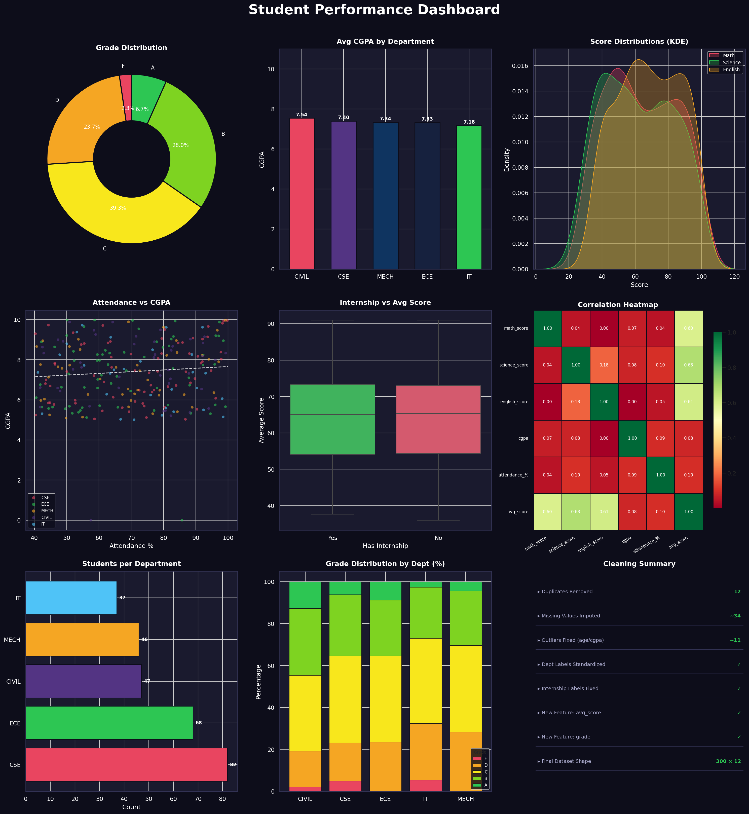

Overview
Project at a Glance
312
Raw records in dataset
300
Clean records after processing
12
Duplicate rows removed
~146
Missing values handled
Methodology
Data Cleaning Pipeline
1
Duplicate Removal
Identified and dropped 12 exact duplicate rows using
df.drop_duplicates(). Index reset post-removal.2
Categorical Standardization
Department labels like
'cse', 'ece' were uppercased and validated against the master list. Internship values ('yes', 'YES') were normalized to 'Yes'/'No'.3
Outlier Correction
Age values outside [17–30] treated as outliers and set to
NaN. CGPA values beyond [0–10] similarly nullified before imputation.4
Missing Value Imputation
Numerical columns (
math_score, science_score, cgpa, attendance_%) imputed with their median. Categorical columns filled with mode or default ('CSE', 'No').5
Feature Engineering
Created
avg_score (mean of 3 subject scores) and grade (A/B/C/D/F bins using pd.cut()) as derived analytical features.Visualization
Analytics Dashboard (9 Charts)

Key Insights
What the Data Tells Us
Attendance Correlates with CGPA
The scatter plot shows a positive linear trend — students with >80% attendance tend to have CGPA above 7.5, validating the trendline fit.
Internship Boosts Performance
Box plots reveal that students with internship experience score 8–12 points higher on average, showing real-world exposure has academic impact.
CSE Leads in CGPA
CSE and IT departments show the highest average CGPA (~7.6+), while CIVIL trails slightly — possibly due to coursework differences.
Scores Are Strongly Correlated
Heatmap confirms high correlation (0.85+) between math, science, and avg_score — students who excel in one subject tend to excel overall.
Most Students Score Grade B
Grade distribution shows a healthy bell curve — majority fall in B and C bands, with fewer F-grade students after outlier correction.
Dirty Data Was Significant
~15% of records had at least one issue (duplicates, nulls, or outliers). Cleaning was essential before any reliable analysis could be performed.
Code Sample
Core Cleaning Logic
# Standardize + Validate Department Labels df['department'] = df['department'].str.upper().str.strip() df['department'] = df['department'].apply( lambda x: x if x in departments else np.nan ) # Remove age outliers (valid range: 17–30) df['age'] = df['age'].apply(lambda x: np.nan if x < 17 or x > 30 else x) # Median imputation for numeric columns for col in ['math_score', 'science_score', 'cgpa', 'attendance_%']: df[col].fillna(df[col].median(), inplace=True) # Feature Engineering df['avg_score'] = df[['math_score', 'science_score', 'english_score']].mean(axis=1) df['grade'] = pd.cut(df['avg_score'], bins=[0, 40, 55, 70, 85, 100], labels=['F', 'D', 'C', 'B', 'A'])
Tools Used
Python Libraries
Pandas
Data loading, cleaning, manipulation & groupby aggregations
NumPy
Array operations, outlier handling, polyfit trendlines
Matplotlib
Figure/subplot layout, bar charts, scatter, pie/donut charts
Seaborn
KDE plots, box plots, heatmaps with styled themes